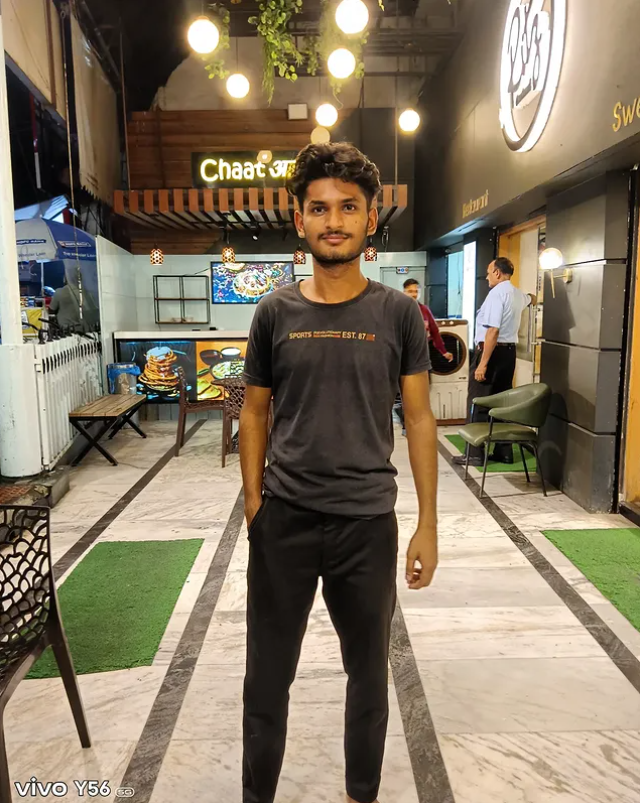

Education
B.Tech CSE (2026)
APJ Abdul Kalam Technical University
A passionate Computer Science student with a curious mind, focused on learning new technologies, solving real-world problems and building a better future through code, research and strategy.

I am Aman Yadav, a B.Tech CSE student at APJ Abdul Kalam Technical University. I enjoy learning new things, exploring technology, and understanding how the world works. My interests go beyond coding — I'm also passionate about research, strategy, communication and continuous self-improvement.
I aim to build a career where I can create meaningful solutions, contribute to innovative projects, and grow as a professional who adds value to society.
♙ Know More About Me →B.Tech CSE (2026)
APJ Abdul Kalam Technical University
India
Open to opportunities worldwide
Technology, Research, Strategy, Problem Solving, Self-Improvement
To build impactful solutions and grow into a skilled professional.
APJ Abdul Kalam Technical University
Expected Graduation: 2026
C/C++, Python, Communication, Research, Strategy and more
Open to internships and exciting opportunities
As you build projects, this section can showcase screenshots, tech stack, GitHub and live demos.
I'm always open to new opportunities, interesting discussions and collaboration. Feel free to reach out!